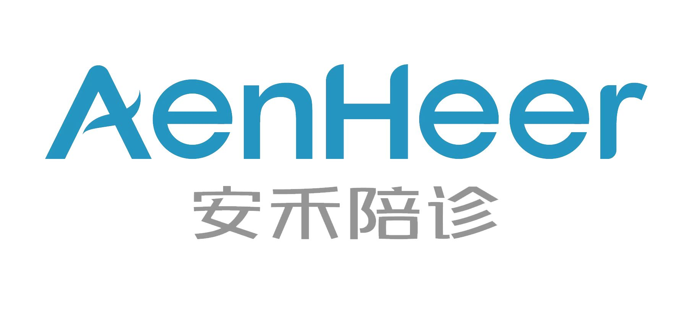

时间：2023-05-13 访问量：1189
伊戎陪诊，助您就医无忧！
城市生活的快节奏，只身一人在北京工作的小谢，疫情全面放开阳了以后，荨麻疹一直未痊愈，在饮食上少有不注意就会身体不适。近半年的时间去过几趟医院，但是随着次数的增加，每次一人跑医院显得非常孤独，感觉时间过得非常漫长。这次去北京大学第一医院皮肤科做检查，找到了我们陪诊员，希望我们在患者就诊的过程中给予陪伴和就医指导。
陪诊员提前二十分钟到达医院，开始做陪诊前的准备，提前通过挂号信息替小谢取号分诊，经过1.5小时的候诊+就诊，候诊中跟小谢聊天、他诉说着这段时间身体不适的状况以及对心态的影响，聊一个人在北京拼搏奋斗的过程。在就诊时及时协助记录医嘱是关键环节，一边手动记录，一边手机录音记录医患沟通的全过程，并陪同小谢开药拿药。通过此次陪诊，我觉得陪诊员不仅仅是熟悉医院的流程，熟悉就诊过程，更是对一人来医院就诊患者的陪伴，让患者在就诊时不那么烦躁和无助，这也许就是陪诊的意义所在。
科普分享|内容摘自三甲医院专家文章
荨麻疹
一、定义
荨麻疹（urticaria）是一种血管皮肤反应，典型表现为短暂的发痒的水疤暴发，水疤为边界清晰、中心苍白、光滑、轻度高出皮面的红斑，形状及大小表现多样。此反应是由局部组胺或高敏反应引起的其他血管活性物质的释放引起的。急性荨麻疹发展迅速，通常有明确的原因，例如对某种药物、食物、蚊虫叮咬、吸尘器或接触性过敏原的高敏反应、情感压力或环境因素。尽管个别损伤可在12～24小时内消失，但新的损伤表现会持续出现。持续超过6周的荨麻疹为慢性的。在数月或数年内可复发，潜在的病因通常不明。有时，心理因素也可引起荨麻疹。血管性水肿或巨大的荨麻疹是急性暴发的典型表现，通常累及黏膜，有时可累及上肢、下肢及生殖器。
二、症状
1、过敏反应
这种威胁生命的反应的典型表现为弥散性荨麻疹的快速暴发，水疱的形态从点状到叶状不等。皮损处通常发痒、刺痛，后可出现感觉异常。其他的急性期表现包括有深切的焦虑、无力、多汗、打喷嚏、呼吸短促、大量鼻涕、鼻腔充血、吞咽困难及皮肤潮热。
2、莱姆病
这种由蜱虫传播的疾病的典型皮损(慢性迁延性红斑)可表现为荨麻疹。晚期表现有持续的乏力、疲劳、间断头痛、发热、寒战、淋巴结病、神经系统及心脏异常、关节炎。
3、其他病因
药物：许多药物都可引起荨麻疹。最常见的有阿司匹林、阿托品、可待因、右旋糖酐、免疫血清、胰岛素、吗啡、青霉素、奎宁、磺胺类药物、疫苗。另外，造影剂也为荨麻疹常见病因，尤其是通过静脉注入时。
对症医院推荐（仅供参考）
复旦大学附属华山医院
复旦排行：全国皮肤科科排行榜第1名
中国医学科学院皮肤病医院
复旦排行：全国皮肤科排行榜第2名
北京大学第一医院
复旦排行：全国皮肤科排行榜第3名
西京医院
复旦排行：全国皮肤科排行榜第4名
中国医科大学附属第一医院
复旦排行：全国皮肤科排行榜第5名
 4008382558
4008382558